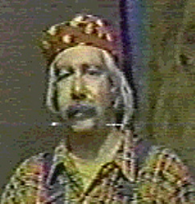

Briggs Gordon, a.k.a. "Uncle Briggs"

Remember "cartoon eyes", "Yessir, we're going to Sesser", and "KPOB...Poplar Bluff"? These were just common sayings every night on the Funny Company when Uncle Briggs took over for Cactus Pete. Characters such as "Bananaman", "Sally Safety",
and others were featured every evening. I remember watching The Three Stooges, Charlie Chaplin, Deputy Dawg and others. Remember when Uncle Briggs did his impression of Deputy Dawg's sidekick.......what was his name? Was he a muskrat? Anyway, I remember him saying "It's possibulll Depty Daaawwwg."
I actually got to visit the old WSIL station in 1978 and watch the show. I remember how cluttered the set was...out of camera range of course. There were props and other things stuffed around the sides of the desk and behind the backdrop. I remember the news set being right next to the Funny Company set.....I was simply amazed at how the station appeared in real life! For a 10 year-old, this was big stuff. I got an autographed picture of Uncle Briggs with Sally Safety.....and I also met him and shook his hand. I hope to find the picture soon and get it on this site.
Uncle Briggs, played by a man in his twenties named Briggs Gordan, could be heard on WEBQ radio after the Funny Company went off the air. Before that, he could also be seen in various reporting duties for WSIL news. In the early 80's, Briggs Gordan passed away. He will be fondly remembered by many "kids" who grew up in the 70's.